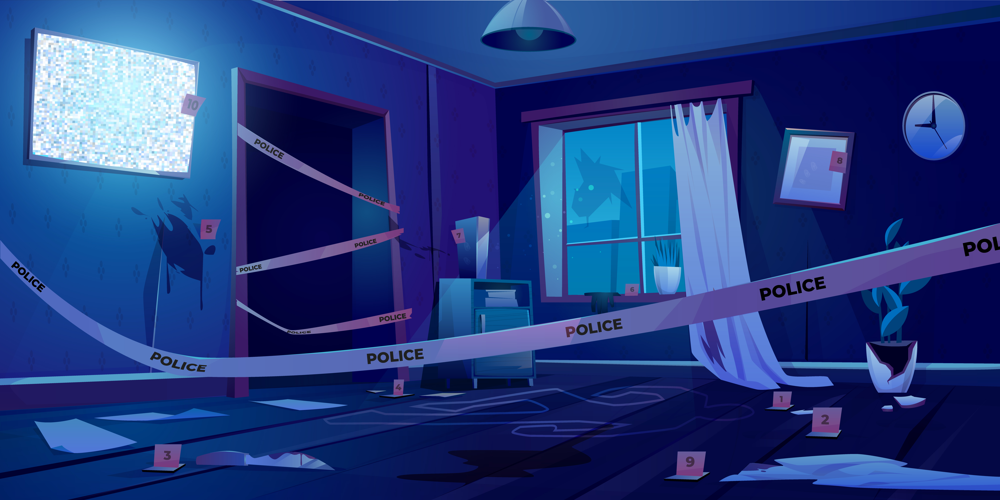

Clue information appears here.
0/6 Evidence Collected
Case Overview:
A crime has taken place at the scene. Your job is to investigate and collect all evidence before you can solve the case.
What you need to do: